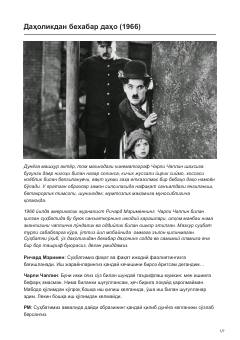

DBBuyuk aktyor Charli Chaplinning ijodiy olami va hayotiga bag'ishlangan samimiy suhbat.
Ushbu kitob amerikalik jurnalist Richard Merimenning buyuk aktyor va rejissyor Charli Chaplin bilan o'tkazgan mashhur suhbatini o'z ichiga oladi. Unda san'atkor o'zining ijodiy qarashlari, mashhur 'Daydi' obrazining yaratilish tarixi va kino olamidagi faoliyati haqida samimiy hikoya qiladi.